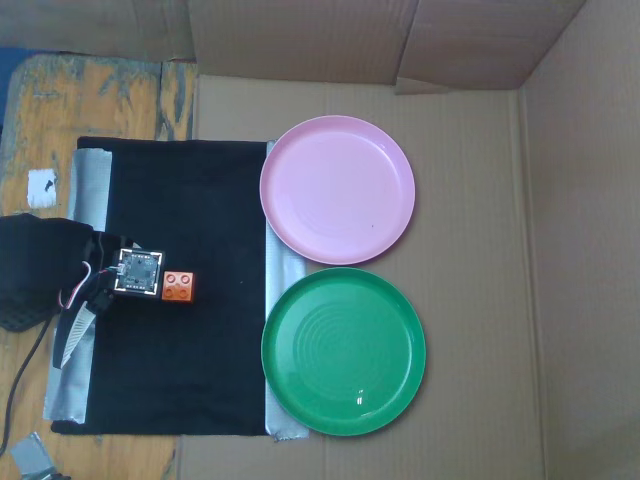
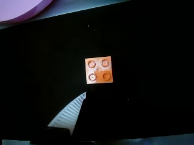

Setup
Before any model could run, the station had to work as one system: two arms, three cameras, an Intel AI laptop and a cloud GPU for training. Getting there took several fixes we'd now treat as standard practice.
Hardware
| Part | What it is | Role |
|---|---|---|
| Robot laptop | Dell XPS 16, Intel Core Ultra X9 388H, Ubuntu | Runs everything at demo time |
| CPU | Performance and efficiency cores | The 30 Hz control loop and camera input |
| Integrated GPU | Intel Xe3, 12 cores | Fast model inference; Anomalib training |
| NPU | Intel AI Boost, 50 TOPS | Low-power inference (tested, not used in the final plan) |
| Follower arm | LeRobot SO-101 with claw | Does the work |
| Leader arm | LeRobot SO-101 handle | A person moves it to record demonstrations |
Three cameras



The same moment from all three cameras: the first frame of a "Block to Green" demonstration.
Software
| Environment | Contents | Used for |
|---|---|---|
| Physical AI Studio | Python 3.13, Intel's robot learning app (web UI), PyTorch for the Intel GPU, OpenVINO | Recording demonstrations, managing datasets, launching training, exporting models |
| Anomalib | Python 3.12, Anomalib 2.0, PyTorch for the Intel GPU, OpenVINO | Training and testing the defect model |
| Modal (cloud) | NVIDIA A10G GPU trainer connected to Studio | Training the arm policies |
Keeping these environments separate stopped library versions clashing. That had a cost later: no single environment could run the whole station (see What happened).
Problems we fixed during setup
| Symptom | Cause | Fix |
|---|---|---|
| Kernel error "Not enough bandwidth" when two cameras start | The side and claw cameras share a USB 2.0 hub. Two uncompressed 640×480 streams overflow it. | Run both at 320×240, 30 fps |
| Camera view spins forever in Studio | A dropped USB connection leaves stale shared-memory files behind | Delete them on every start (built into the start script) |
| Dataset loader crashes on video | Missing system video-decoding libraries | Install FFmpeg 8 libraries |
| Arms swap ports after re-plugging | Linux renumbers USB serial devices | Studio matches each arm by its hardware serial number |
We calibrated both arms once and saved the result so it could be restored in a second instead of redone. That backup matters later: the hardware failure began when calibration had been removed during testing.
Add a photo of the whole station: both arms, the three cameras, the bowls and the laptop.